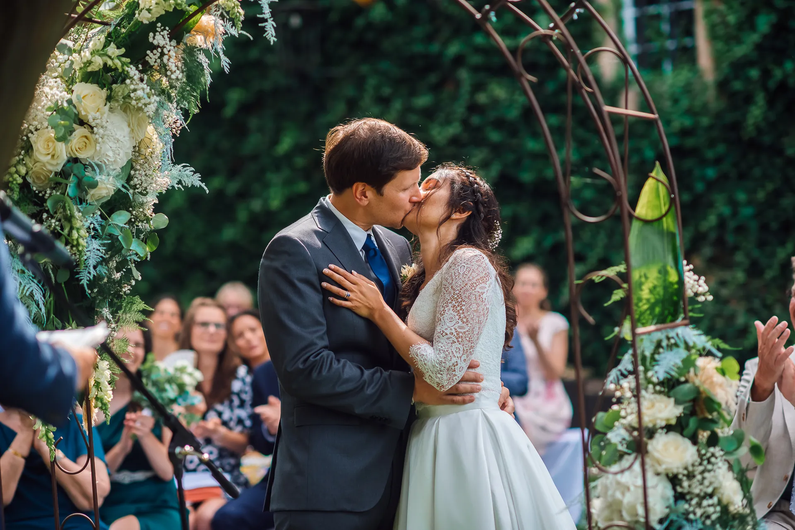

Standesamt
Kurze Begleitung
ab 590 €Ideal für das Ja-Wort, Gratulationen und ein entspanntes Paarshooting ohne Zeitdruck.
Zwischen Villa Leutert, Lahn und Schiffenberg.
Als Hochzeitsfotograf Gießen begleite ich Hochzeiten mit Ruhe und einem Blick für die Szenen, die einen Tag wirklich tragen: das Ankommen an der Villa Leutert, Licht am Wasser, ein paar Minuten im Botanischen Garten oder der weite Blick oben am Schiffenberg. Gießen lebt fotografisch von Nähe, Grün und kurzen Wegen.
Anreise inklusive

Gießen ist stark, wenn ihr euch eine Stadt wünscht, die nicht laut sein muss. Zwischen standesamtlichen Trauorten, Wasser, alten Bäumen und stilvollen Feierlocations im Umland entstehen Hochzeitstage, die leicht bleiben und trotzdem viele unterschiedliche Bilder möglich machen.
Die Villa Leutert ist das romantische Trauzimmer des Gießener Standesamts in einem kleinen Loire-Schlösschen. Perfekt für Paare, die sich eine intime standesamtliche Hochzeit wünschen und danach ohne großen Ortswechsel direkt in Empfang, Spaziergang oder Paarshooting starten möchten.
Am Kloster Schiffenberg sind Trauungen sowohl in der Basilika als auch im Trauzimmer der Komturei möglich. Die Mischung aus Geschichte, Natur und Weite ist besonders schön für Paare, die sich einen ruhigeren, atmosphärischen Rahmen mit echter Eigenständigkeit wünschen.
Das Standesamt Gießen bietet an ausgewählten Terminen Trauungen auf einem Boot auf der Lahn an. Wenn ihr euch etwas Besonderes wünscht, ohne kitschig zu werden, ist das einer der charmantesten und eigenständigsten Trauorte der Region.
Der Botanische Garten ist eine ruhige, grüne Oase mitten in der Stadt und einer der schönsten Orte für Paarfotos in Gießen. Alte Bäume, Wege und viel natürliches Licht schaffen eine entspannte Kulisse, die sich leicht und unaufgeregt anfühlt.
Für ausgewählte Termine nutzt das Standesamt auch den Netanya-Saal im Alten Schloss. Das passt gut zu Paaren, die sich für ihre standesamtliche Hochzeit etwas mehr architektonischen Charakter und einen historischen Rahmen wünschen.
Im heyligenstaedt trifft Industriedenkmal auf modernes Design. Für Paare, die in Gießen hochwertig feiern möchten, ist die Location mit klaren Räumen, Außenbereich und Übernachtungsmöglichkeiten eine der spannendsten Adressen der Stadt.
Wir sind beide relativ kamerascheu — abgesehen vom geplanten Paarshooting haben wir Natalia kaum bemerkt. Das hat enorm dazu beigetragen, dass sie natürliche und wunderschöne Fotos eingefangen hat.
Google-BewertungWir hätten uns keine bessere Fotografin als Natalia vorstellen können. Sie ist eine echte Künstlerin und arbeitet mit so viel Hingabe und Liebe, vom ersten Kontakt bis zur Begleitung an unserem besonderen Tag.
Google-BewertungIhre Leidenschaft für ihre Arbeit ist wirklich spürbar. Sie hat definitiv die schönsten Momente unseres besonderen Tages in ihren Fotos festgehalten.
Google-Bewertung
"Mich interessiert nicht die perfekte Pose. Mich interessiert der Blick, den er dir zuwirft, wenn er denkt, dass niemand hinschaut."
Natalia Tschischik — Hochzeitsfotografin seit 2012
An Gießen mag ich diese Mischung aus Wasser, Grün und historischen Inseln mitten im Alltag der Stadt. Ihr seid schnell vom Standesamt am Fluss, im Garten oder am Schiffenberg, ohne dass der Tag zerrissen wirkt. Genau das passt zu meiner Art zu fotografieren: aufmerksam, ruhig und immer nah an dem, was zwischen euch wirklich passiert.
— NataliaSchreibt mir eine kurze Nachricht mit eurem Datum und eurer Location in Gießen oder Umgebung. Ich melde mich innerhalb von 24 Stunden — versprochen.
In einem lockeren Videocall (ca. 20 Min.) lernen wir uns kennen. Ihr erzählt mir von eurem Tag, ich erzähle euch, wie ich arbeite.
Passt alles? Dann sichert euch euren Termin mit einer Anzahlung. Den Rest regeln wir ganz entspannt per E-Mail.
Euer Datum steht? Oder ihr seid noch mitten in der Planung? Egal — schreibt mir einfach. Jede Anfrage ist unverbindlich, und ich antworte innerhalb von 24 Stunden. Ich freue mich, eure Geschichte zu hören.